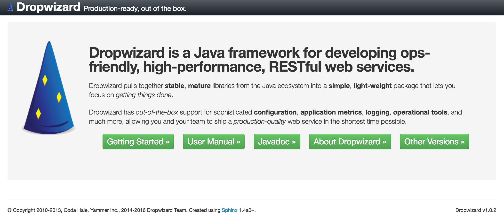
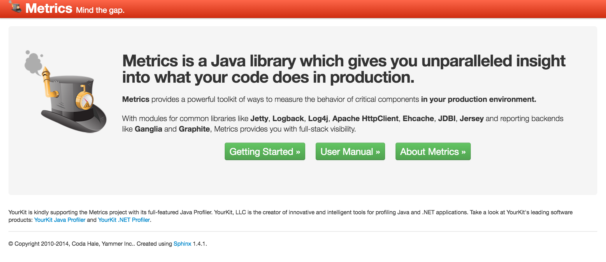
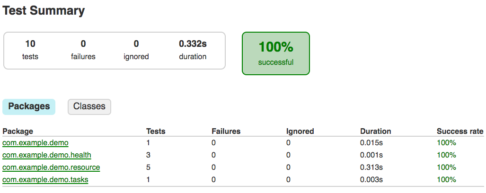

public class DemoApplication extends Application<DemoConfiguration> {
public static void main(String[] args) throws Exception {
new DemoApplication().run(args);
}
@Override
public void initialize(Bootstrap<DemoConfiguration> bootstrap) {
}
@Override
public void run(DemoConfiguration configuration,
Environment environment) throws Exception {
}
}Dropwizard
Pragmatische Web Services mit Dropwizard


Dropwizard is a Java framework for developing ops-friendly, high-performance, RESTful web services.
Dropwizard pulls together stable, mature libraries from the Java ecosystem into a simple, light-weight package that lets you focus on getting things done.
Dropwizard has out-of-the-box support for sophisticated configuration, application metrics, logging, operational tools, and much more, allowing you and your team to ship a production-quality web service in the shortest time possible.

Eine kurze Geschichte des Frameworks
Entwickelt von Coda Hale bei Yammer
Häufig auftretende Muster der Backend-Anwendungen bei Yammer in ein Framework extrahiert
Erstes Release: 2011-12-22 (Dropwizard 0.1.0)
Eigenständiges Projekt seit 2014 (Dropwizard 0.7.0)
Aktuelles Release: Dropwizard 1.1.0-rc4 (Stand: 2017-03-15)
Warum Dropwizard?
Dropwizard bringt viele Standardkomponenten mit
Bekannte und bewährte Bibliotheken
Alle Teile bestens integriert
Gute Dokumentation
Wiederverwendung von Java EE Wissen
Operations friendly
Kurze Time-to-Market
Langweilige Technologien (1)
Jetty als Web-Server (HTTP, HTTPS, HTTP/2)
Jersey (JAX-RS) als Web-Framework
Jackson für (De-) Serialisierung
Logback und SLF4J für Logging
Freemarker oder Mustache für Templates
JDBI oder Hibernate für Persistenz
Langweilige Technologien (2)
Guava als Ergänzung zur Java Standardbibliothek
Hibernate Validator zur Validierung von Daten
Liquibase für Datenmigration
Guter Support für Tests (vorzugsweise JUnit)
…und vieles mehr, siehe Dropwizard User Manual
Dropwizard Application (1)
Normale Java-Klasse mit
mainMethodeKeine Code-Generierung
Keine (bzw. wenig) "Annotations Magic"
Dropwizard Application (2)
Dropwizard Application (3)
public void initialize(Bootstrap<DemoConfiguration> bootstrap) {
bootstrap.addBundle(...);
bootstrap.addCommand(...);
}Dropwizard Application (4)
public void run(DemoConfiguration configuration,
Environment environment) throws Exception {
environment.jersey().register(EchoResource.class);
environment.lifecycle().manage(...);
environment.healthChecks().register("demo-health", ...);
environment.admin().addTask(...);
}Dropwizard Application (5)
public class DemoConfiguration extends Configuration {
@NotBlank
private String customSetting;
public String getCustomSetting() {
return customSetting;
}
}Dropwizard Application (6)
@Path("/echo")
@Produces(MediaType.TEXT_PLAIN)
public class EchoResource {
@GET
@Timed
public String echo(@QueryParam("message")
@NotBlank
String message) {
return message;
}
}Tests
JUnit rules für
(JAX-RS) Resource Tests
Integration Tests
(Jersey) Client Tests
Tests - Resource Tests
@ClassRule
public static final ResourceTestRule resources =
ResourceTestRule.builder()
.addResource(new PingResource())
.build();
@Test
public void testPingPong() throws Exception {
final Pong expectedPong = ImmutablePong.builder()
.message("pong")
.build();
final Pong actualPong = resources.client().target("/ping")
.request()
.get(Pong.class);
assertEquals(expectedPong, actualPong);
}Tests - Integration Tests
@ClassRule
public static final DropwizardAppRule<DemoConfiguration> RULE =
new DropwizardAppRule<>(
DemoApplication.class,
ResourceHelpers.resourceFilePath("demo_test.yml"));
@Test
public void testListKittens() throws IOException {
final Client client = ClientBuilder.newClient();
final Collection<Kitten> kittens = client
.target(String.format("http://localhost:%d/kittens/", RULE.getLocalPort()))
.request(MediaType.APPLICATION_JSON)
.get(new GenericType<Collection<Kitten>>() {});
assertEquals(1, kittens.size());
assertEquals("Findus", Iterables.getOnlyElement(kittens).getName());
}Tests - Happy Builds

Operations friendly
Healthchecks
Tasks (ad-hoc ausführbare Aktionen via HTTP)
Commands (ad-hoc ausführbare Aktionen via CLI)
Metrics (via Dropwizard Metrics)
Gut konfigurierbares Logging (Logback, SLF4J)
Einfaches Deployment als JAR-Datei
Operations friendly - Healthchecks (1)
protected Result check() throws Exception {
if (store.isRunning()) {
return Result.healthy("Store is OK.");
} else {
return Result.unhealthy("Store is offline.");
}
}Operations friendly - Healthcheck (2)
{
"deadlocks" : {
"healthy" : true
},
"demo-health" : {
"healthy" : true,
"message" : "Everything is fine. :)"
},
"store-health" : {
"healthy" : true,
"message" : "Store is OK."
}
}Operations friendly - Tasks (1)
public void execute(ImmutableMultimap<String, String> parameters,
PrintWriter output) throws Exception {
output.println(parameters);
}Operations friendly - Tasks (2)
$ curl -X POST \
'http://localhost:8080/admin/tasks/echo?param=value1¶m=value2'
{param=[value1, value2]}Operations friendly - Commands (1)
protected void run(Bootstrap<DemoConfiguration> bootstrap,
Namespace namespace,
DemoConfiguration configuration) throws Exception {
System.out.format(
Locale.ENGLISH,
"Hi! This demo is presented by %s in %d.\n",
configuration.getSpeakerName(),
configuration.getYear());
}Operations friendly - Commands (2)
$ java -jar build/libs/demo-1.0.0-SNAPSHOT-all.jar greet config.yml
Hi! This demo is presented by Jochen Schalanda in 2017.Operations friendly - Commands (3)
$ java -jar build/libs/demo-1.0.0-SNAPSHOT-all.jar check config.yml
INFO [2017-01-11 15:02:26,269] io.dropwizard.cli.CheckCommand:
Configuration is OK
$ java -jar build/libs/demo-1.0.0-SNAPSHOT-all.jar check config.yml
config.yml has an error:
* Unrecognized field at: spiekerName
Did you mean?:
- speakerNameOperations friendly - Metrics
{
"com.example.demo.resource.PingResource.pingPong" : {
"count" : 6,
"m15_rate" : 1.0,
"m1_rate" : 1.0,
"m5_rate" : 1.0,
"mean_rate" : 0.7386288754923656,
"units" : "events/second"
}
}Metrics Reporter für Graphite, InfluxDB, Prometheus uvm.
Demo
Microservice
NoSQL
DevOps-friendly
BINGO! 🎉
Erweiterungen
5 offiziell, 75 von der Community (Stand: 2017-03-15)
Wer benutzt eigentlich Dropwizard?
Die liebe Verwandtschaft
Kontakt